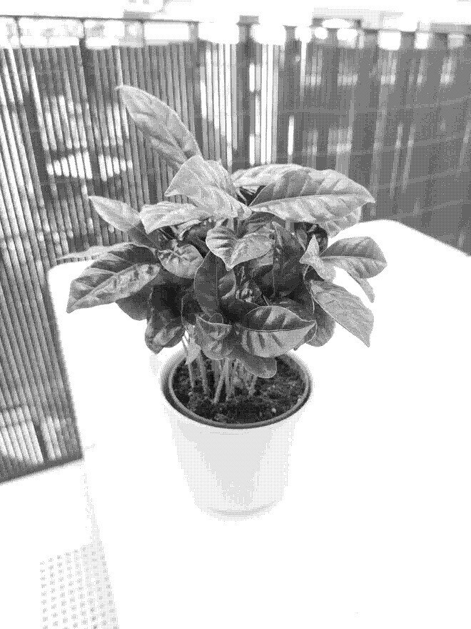

Coffea arabica

Care
Coffee!!
- Keep the soil moist and don't allow it to dry out completely
- Likes bright but indirect light, best placed near a window
- Do best in temperatures between 18-24°C
- Requires moist air, mist it daily or more if necessary
- Produces star-shaped, scented white flowers after 3-4 years
- Don't expect it to produce beans for coffee...